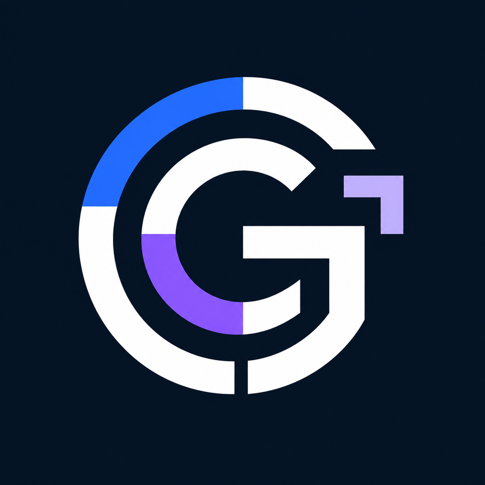

One direction. More possibilities.
Color refinements, new geometry, silhouette studies, and surface finishes. Standalone symbols only.
{kind=link}
01 · Arctic Coordinate
Closest to the selected mark, with crisp edges and a cyan bracket.
{kind=link}
02 · Crimson Coordinate
The familiar GC silhouette with a vivid red coordinate accent.
{kind=link}
03 · Ultraviolet Coordinate
A cool white GC and a saturated violet coordinate corner.
{kind=link}
04 · Champagne Coordinate
Warm ivory geometry with a restrained champagne-gold bracket.
{kind=link}
05 · Mint Soft Square
A rounded-square GC with a mint coordinate accent.
{kind=link}
06 · Cobalt Hexagon
Faceted hexagonal GC geometry and an electric-blue accent.
{kind=link}
07 · Solar Interlock
Offset interlocking arcs with an amber-orange accent.
{kind=link}
08 · Emerald Compass
Concentric GC geometry with a crisp directional chamfer.
{kind=link}
09 · Open Arc
Slender arcs, a larger counter, and an icy coordinate corner.
{kind=link}
10 · Bold Signal
Broad strokes and a compact counter for a strong small icon.
{kind=link}

11 · Split Orbit
Interlocking crescents with restrained blue and violet sections.
{kind=link}
12 · Monochrome
A single-color white GC with precise negative space.
{kind=link}
13 · Satin Titanium
Fine satin metal, narrow bevels, and a red coordinate corner.
{kind=link}
14 · Midnight Ceramic
Smooth white ceramic and a turquoise enamel accent.
{kind=link}
15 · Ion Edge
Contained blue edge highlights and a violet coordinate bracket.
{kind=link}
16 · Lime App Badge
Compact GC geometry in a dark app tile with a lime accent.